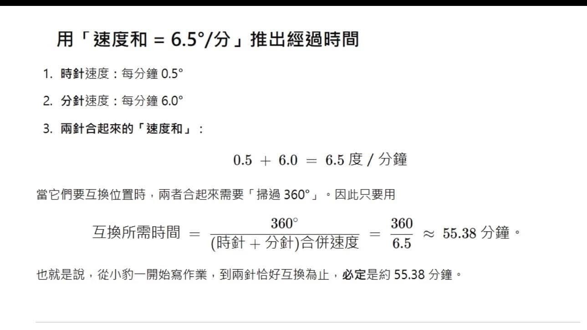
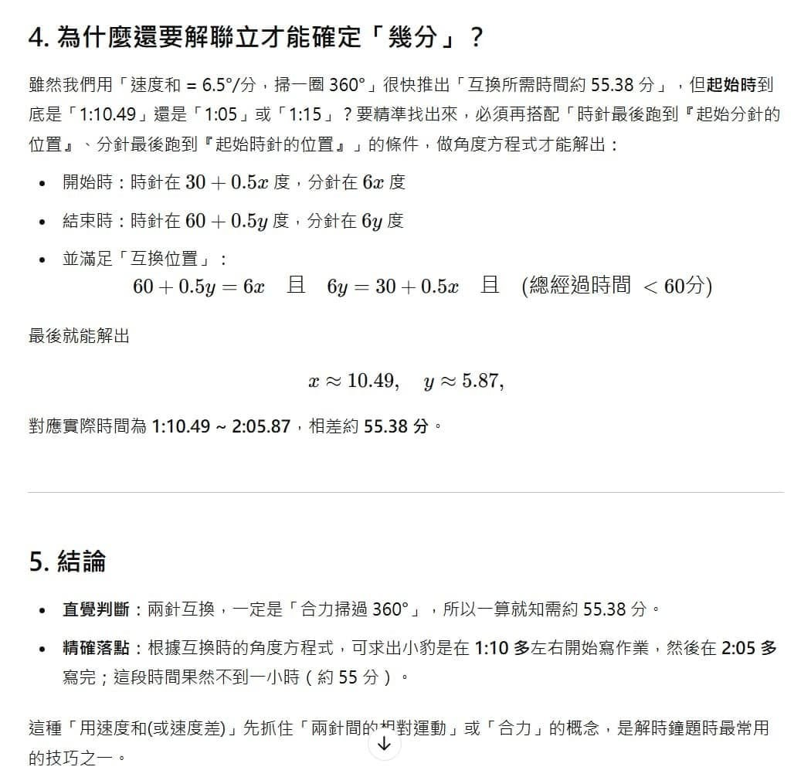

AI展現了驚人的「學習能力」！
～獵豹將密切關注AI的發展，我們必需瞭解AI的弱點，訓練孩子能與「他」競爭的能力。
以「知識、公式、套路、刷題」的方式訓練的孩子，在AI時代將無法建立任何有意義的競爭力，勢將落入M型分佈的左端…
針對前天的第三道題，我給予了 AI提示，希望用類比的方式（一種高級的分析能力），讓AI優化它的做法，他在犯了一次錯後，我再作一次提醒，它表現得幾乎跟一個聰明的國中生一樣 給出了完美的做法，其中它計算「寫作業時間」的方法，已經展現了「類比」的能力，而這種能力正是人類創造力的泉源‼️
我對AI的恐懼又加深了…
下面是我對GhatGPT O1的訓練與回饋：
問題：某人下午六點多外出時，看看手錶兩指針夾角為110度，下午七點前回家時，發現手錶兩指針夾角又為110度，請問他外出多長時間？
分析方法：
分針每一分鐘旋轉6度，
時針每一分鐘旋轉0.5度。
也就是每經歷一分鐘，分針可以追趕時針（6-0.5）=5.5度。
出門時六點多，可以看成時針領先了分針110度；回家時不到七點，可以看成分針領先了時針110度。
因此整個過程相當於分針追趕了時針220度，因此經歷的時間是（220/5.5）=40分鐘。
現在請你學習這題的分析方式：注意時針、分針的旋轉速度以及它們的速度的和與差來處理下面這道問題。
問題：小豹在午飯後開始寫數學作業。他看了牆上的時鐘，時間是一點多。不到一小時他便寫完作業，他抬頭看了時鐘發現此時的時、分針恰好與開始寫作業的時、分針互換了位置，請問小豹是幾點開始寫作業的？

